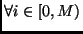
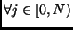
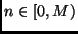
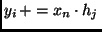
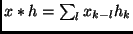
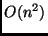
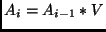
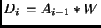
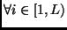
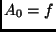

Wavelets via Convolution
Many mathematicians such as Walker[2], use a form that eliminates half of the values.
Thus a form can be defined which has the same number of elements as the original. The rules for choosing the member elements are dependent on the wavelet filter choice.
Another useful property of wavelets via convolution is the simplicity of the
operation. The general case works for all. Such an algorithm requires one nested loop as seen below:
  n=i-j if ( ) 
This filter simply equates to the mathematical function: , which is the convolution operation. As we can see the operation is slightly less than  . For practical use, the filter is made smaller than the actual signal being analyized. In some cases, the filter may be much smalled than the signal. Filter size matters in extracting features from the original signal. In the case of this convolution operator, the limit is acutally M, not N. The value of M is the size of the original signal. Since the resulting vector is the same as the original, the vector is said to be fully qualified. Only half of those values are necessary to reconstruct the original (every other element). To perform a wavelet transform via convolution, each signal is convolved twice.   where V is the scaling wavelet vector W is the differencing wavelet vector A is the average vector (scaled vector) D is the difference component vector  and  which is the original signal L is the limit on the number resolutions that signal can have based on the wavelet type.